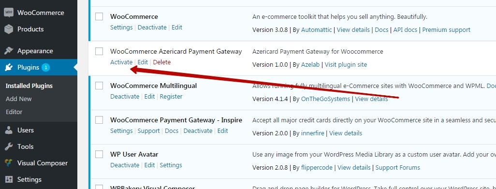
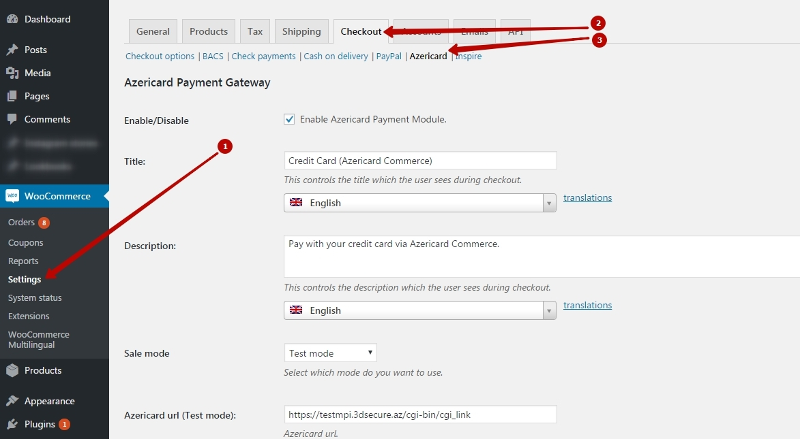
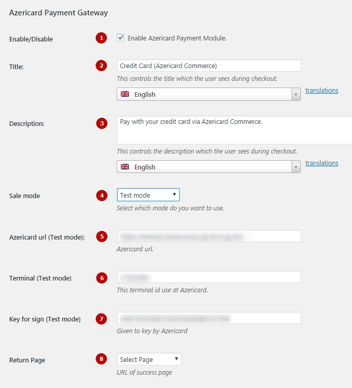
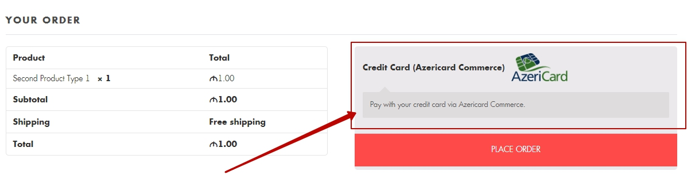
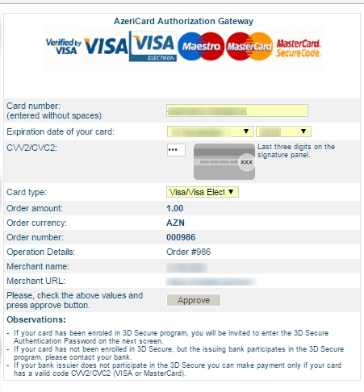
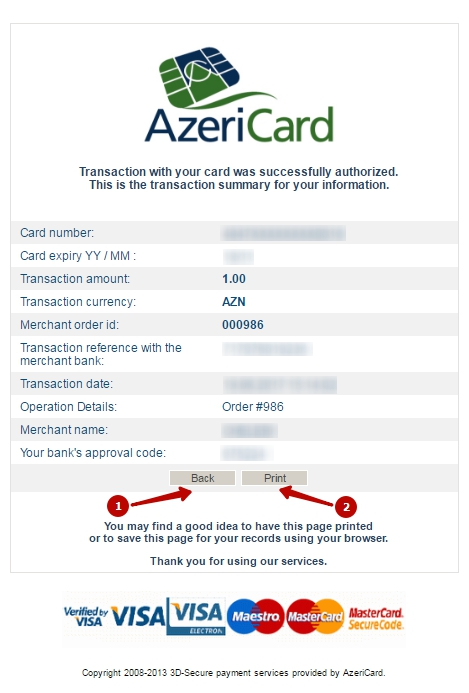
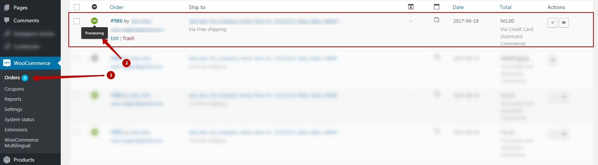
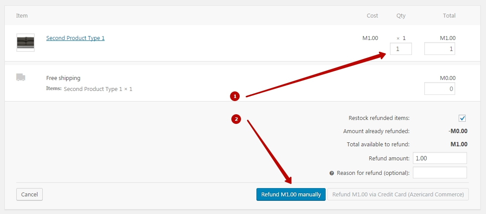

Прежде всего, спасибо за скачку плагина. Мы очень ценим это и надеемся вам понравится. Подписывайтесь на нашу страницу в фейсбуку Azelab
Для того, что-бы скачать плагин перейдите по ссылке Страница загрузки плагина. Затем перенесите папку плагина "azericard-payment-gateway-woocommerce" в директорию Вашего wordpress /wp-content/plugins/
Или Вы можете добавить наш плагин через панель администратора. Cледует сначало переархивировать директорию "azericard-payment-gateway-woocommerce" из скаченного общего архива.
Azericard Payment Gateway служит расширением функционала для платформы WooCommerce, по этому установка этого плагина обязательна.
После установки плагина нужно перейти в панели администратора: Плагины/Установленные плагины/Нажать кнопку "Активировать"
После активации обеих плагинов можно начать настройку Azericard Payment Gateway
Для этого нужно перейти WooCommerce/Настройки/Платежи/Azericard
Ниже указаны основные опции с помощью которых можно настроить Azericard Payment Gateway:
Для настройки терминала для Вашего магазина и получения необходимых полей настроек, необходимо обратиться в поддержку Azericard по адресу tsupport@azericard.com
После всех настроек на странице "Платежи" добавится способ оплаты Azericard.
После отправки формы со страницы "Платежи" пользователя перенаправит на сервер оплаты Azericard, где нужно ввести данные карточки.
Если все данные были введены верно, пользователю предоставится отчет о проведенной операции. После чего он сможет вернуться на страницу (1)(указанную в поле "Основные настройки/Return page"), либо распечатать отчет (2).
Если оплата прошла успешно, в панеле администратора WooCommerce/Заказы появится новый заказ со статусом "Обработка (Processing)". Если же оплата не прошла, заказ будет добавлен со статусом "В ожидании оплаты (Panding Payment)", а позже будет изменен на "Отменен (Canceled)".
Платформа Azericard позволяет вернуть полную стоимость заказа на карту клиента.
Для этого администратору нужно перейти в панеле по ссылке WooCommerce/Заказы/Конкретный заказ, нажать кнопку "Возврат (Refund)" и заполнить форму возврата.
После успешного возврата, в правой панеле заказа "Заказ заметки (Order notes)" появится комментарий "Success! The payment was refunded.", а статус заказа будет изменен на "Возвращен (Refunded)."
Если возврат не произошел, появится комментарий "Something wrong. The payment wasn't refunded. Please, try later.".
Заметка: На данный момент Azericard позволяет вернуть не более полной стоимости заказа.
Данный плагин был тщательно протестирован на живом сайте. Тем не менее, если у вас возникнут вопросы, пожалуйста обращайтесь в нашу службу поддержки, мы будем рады вам помочь.
{kind=link}
{kind=link}
{kind=link}
{kind=link}
{kind=link}
{kind=link}
{kind=link}
{kind=link}